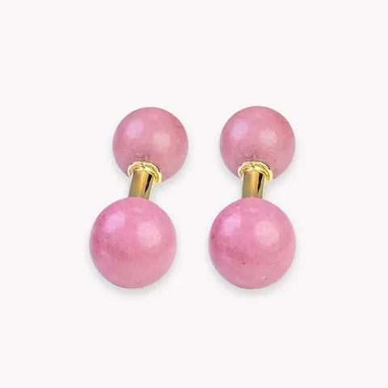
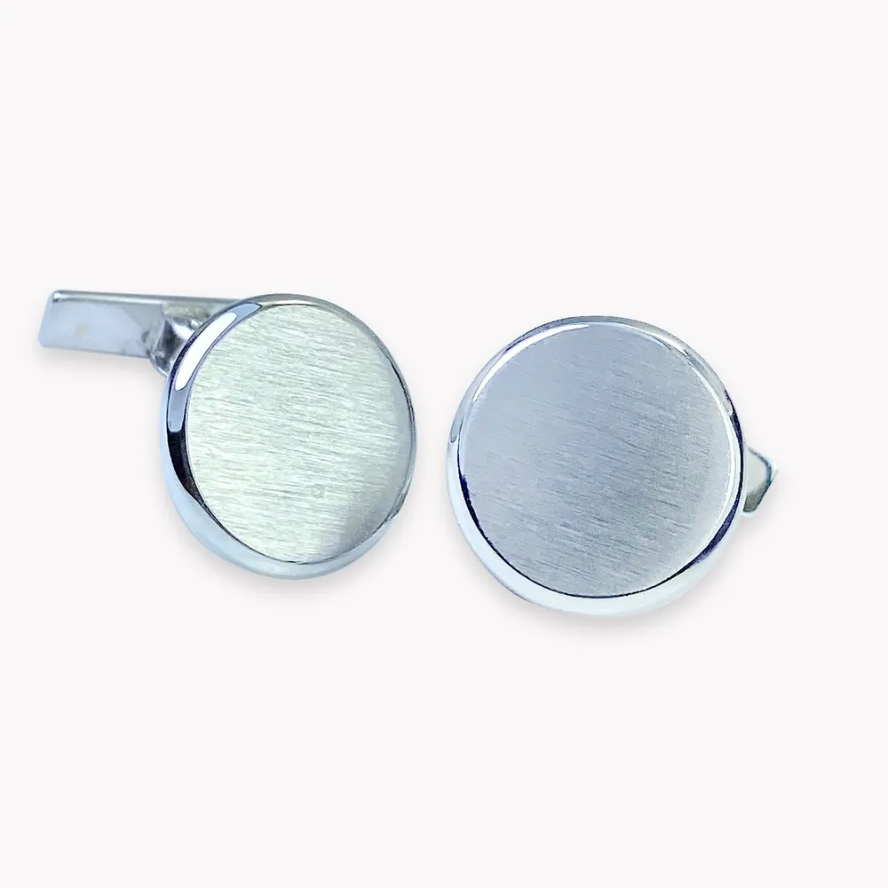
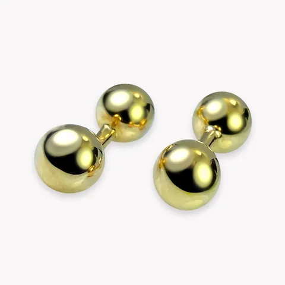
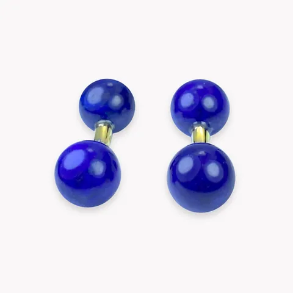
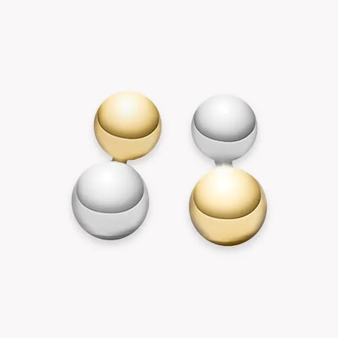

Oro amarilloge1407

Gemelos
Gemelos oro blanco. Un modelo que podría definirse como «menos es más», caracterizado por sus líneas finas y depuradas. Elaborado en oro blanco, cuenta con forma redondeada, convirtiéndose en el complemento perfecto para jóvenes con estilo y personalidad.
Precio y disponibilidad, en la joyería.Te lo confirmamos por WhatsApp o sentados en la mesa.

Oro amarilloge1407

Oro amarilloge6111

Oro amarilloge2600

Oro blancoge6113